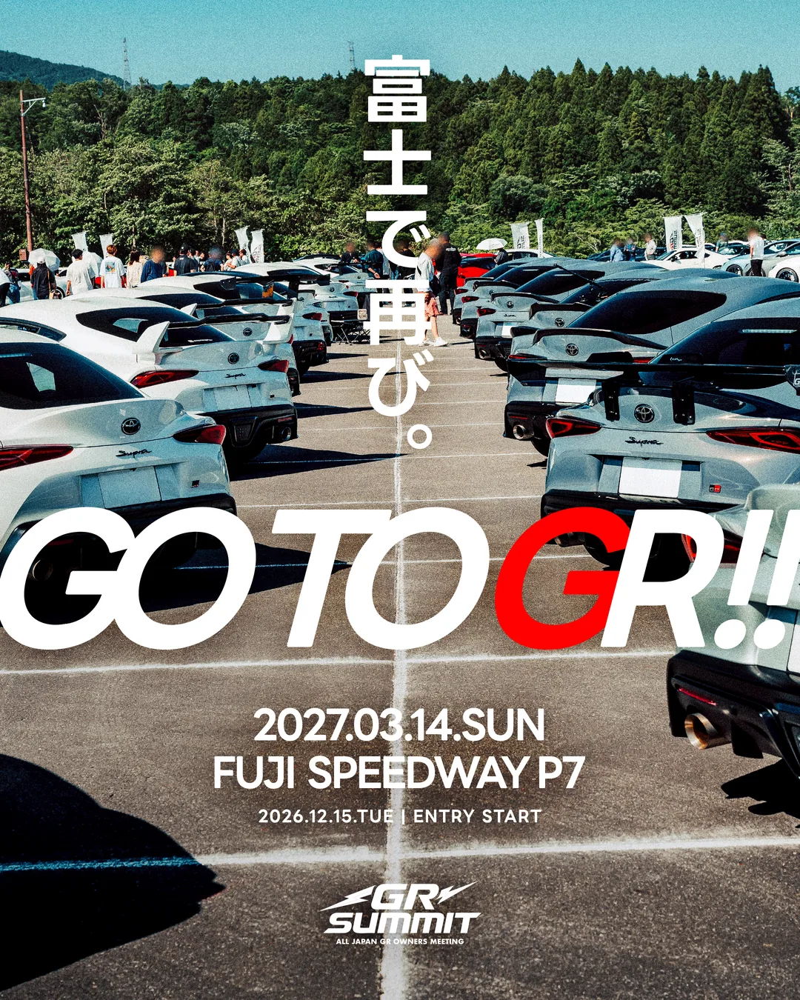

GR
GRシリーズ
- GRスープラ
- GRヤリス
- GR86
- GRカローラ
- GRコペン

1,100人突破!
現在 1,131人
2026年11月17日時点
あなたも登録して
エントリー開始を待とう
ALL JAPAN GR OWNERS MEETING
全国のGRが､富士に再集結｡
"見るだけ"じゃない､"集う"イベント｡
今年は企画も盛りだくさん｡
イベント初参加・ソロ参加・見学も大歓迎です｡
2026 初開催
約200台
来場 約1,000人
2027 開催規模（予定）
400台規模
2,000人規模
2026年5月30日(土)､富士スピードウェイで初開催｡
2027年はさらに大きなスケールで開催します｡
OUTLINE
開催日
2027.03.14SUN
2027年3月14日(日)
参加車両エントリー
2026.12.15TUE START
受付は公式LINEでご案内します
ELIGIBLE CARS
GRの名を持つクルマなら､ノーマル・カスタム問わず参加OK｡
GRパーツやエアロを装着した「GR仕様車」も歓迎します｡
GR
GR SPORT
G's
GRMN
GR仕様車
GRパーツやGRエアロを装着したクルマも参加できます｡前回は､実在しない「GRカローラセダン仕様」で参加された方も｡こだわりの1台で集まってください｡
※参加できるか気になる車両は､公式LINEからお気軽にご相談ください｡
ENTRY
参加車両のエントリーは2026年12月15日(火)スタート｡
受付のご案内は公式LINEでお届けします｡
2026.12.15 TUE START
公式LINE登録者 1,100人突破!（現在 1,147人・2026年11月18日時点）
公式LINEに登録してショップ・メーカー・飲食など
クルマで参加しなくてもOK
GRが好きな方なら､見学だけでも楽しめます｡詳細はエントリー開始時に公式LINEでお知らせします｡
※見学の場合も､富士スピードウェイの入場料とは別に､イベントの入場料がかかります｡金額は決まり次第お知らせしますので､最新情報をお待ちください｡
公式LINEで最新情報を受け取る雑誌・Webメディア・ネットニュースなど
GR SUMMITの取材をご希望の方は､GR SUMMIT運営事務局までメールでお気軽にご相談ください｡
event@legendaryworks.co.jp
メールで取材を相談する全国のGRを､あなたのカメラで
ずらりと並ぶGRを､ぜひたくさん撮りに来てください｡撮影した写真を共有いただければ､撮影者のクレジットを入れて公式SNSでご紹介させていただくこともできます｡
メールで相談するGR SUMMIT 2026
2026年5月30日(土)､富士スピードウェイに集まった約200台のGR｡
写真をタップすると拡大できます｡
202年
2027年3月14日､富士で再び｡
MINI GAME
富士へ向かう道を駆け抜けるミニレースゲーム｡車とコーンをかわして「GR」トークンを集め､ベストスコアを狙おう｡スマホでも遊べます｡
現在 0 人の方に遊んでいただきました!
Q&A
2027年3月14日(日)､静岡県の富士スピードウェイ P7（静岡県駿東郡小山町中日向694）で開催します｡
参加車両のエントリーは2026年12月15日(火)にスタートします｡エントリーのご案内はGR SUMMIT公式LINEからお届けします｡今のうちに公式LINEを友だち追加して､受付開始をお待ちください｡
エントリー開始のお知らせ､エントリーフォーム､GR SUMMITの最新情報が届きます｡
GRスープラ・GRヤリス・GR86・GRカローラ・GRコペンのGRシリーズ､プリウス・アクア・ヴィッツ・マークX・ハリアー・ヴォクシー・ノア・コペン・C-HR・ランドクルーザー・ハイラックス・ヤリスクロス・カローラクロス・RAV4などのGR SPORT全車種､アルファード／ヴェルファイアG'sを含むG's各車種､iQ・ヴィッツ・マークX・86・ヤリスのGRMN各車種で参加できます｡ノーマル・カスタムは問いません｡
はい､参加できます｡GRパーツやGRエアロを装着した「GR仕様車」も歓迎しています｡前回は､実在しない「GRカローラセダン仕様」で参加された方もいました｡参加できるか気になる場合は公式LINEでご相談ください｡
大丈夫です｡イベント初参加の方､ソロ参加の方も大歓迎です｡"見るだけ"ではなく､全国のGRオーナーと"集う"イベントです｡
はい､エントリーできます｡前回参加されていない方も大歓迎です｡
はい､見学も大歓迎です｡見学の場合も､富士スピードウェイの入場料とは別にイベントの入場料がかかります｡金額などの詳細は決まり次第お知らせしますので､最新情報をお待ちください｡
見学も大歓迎です｡同乗者・同行者についての詳細は､エントリー開始時に公式LINEでお知らせします｡
詳細はエントリー開始時（2026年12月15日(火)）に公式LINEでお知らせします｡
はい｡富士スピードウェイの入場料は､イベントの参加費とは別に必要です｡イベントの参加費などの詳細は､エントリー開始時に公式LINEでお知らせします｡
会場は富士スピードウェイ（静岡県駿東郡小山町中日向694）です｡お車の場合は､カーナビで「富士スピードウェイ」と検索してください｡アクセス方法は富士スピードウェイ公式サイトのアクセス案内をご確認ください｡
前回（2026年）の会場P1にはお手洗いや自動販売機がありませんでしたが､今回の会場P7には来場者用の無料駐車場があり､お手洗いや自動販売機も近くにあります｡安心してお越しください｡
途中退出は原則不可となる予定です｡詳細はエントリー時にご案内します｡
当日はスタッフが会場で写真・動画を撮影し､公式SNSやメディアに掲載することがあります｡お顔の掲載を希望されない方は､当日スタッフにお気軽にお声がけください｡参加者の皆さまのSNS投稿も大歓迎です｡ハッシュタグ #GRSUMMIT をつけて投稿してください｡
初開催の2026年5月30日(土)､富士スピードウェイに約200台のGRが集まり､約1,000人が来場しました｡2027年は400台規模・2,000人規模での開催を予定しています｡
ブース出展を募集しています｡GR SUMMIT運営事務局（event@legendaryworks.co.jp）へメールでご連絡いただくか､公式LINEからお申し込みください｡
出展料やブースサイズなどは出展資料でご案内しています｡GR SUMMIT運営事務局（event@legendaryworks.co.jp）までお問い合わせください｡
雑誌・Webメディア・ネットニュースなどの取材を受け付けています｡GR SUMMIT運営事務局（event@legendaryworks.co.jp）までメールでご相談ください｡
ボランティアカメラマンも大歓迎です｡ずらりと並ぶGRを､ぜひたくさん撮りに来てください｡撮影した写真を共有いただければ､撮影者のクレジットを入れて公式SNSでご紹介させていただくこともできます｡ご相談はGR SUMMIT運営事務局（event@legendaryworks.co.jp）まで｡
GR SUMMIT運営では､不定期でツーリングミーティングも開催しています（例：TOURING MEETING in FUKUSHIMA 2026.11.07）｡次回は2027年4月に開催予定で､公式LINE・公式SNSでお知らせします｡
スマホでも遊べる､ブラウザで動く短いミニレースゲームです｡車とコーンをかわしてGRトークンを集め､2周のタイムを競います｡ミニゲームはこちらから遊べます｡
最新情報は公式LINE､公式Instagram（@gr_summit_japan）､公式X（@GR_SUMMIT_JAPAN）でお知らせします｡エントリーのご案内は公式LINEから届きます｡
TOURING MEETING
GR SUMMIT運営では､不定期でツーリングミーティングも開催しています（例：TOURING MEETING in FUKUSHIMA 2026.11.07）｡次回は2027年4月に開催予定です｡お知らせは公式SNS・公式LINEで｡
ENGLISH
GR SUMMIT 2027 (ALL JAPAN GR OWNERS MEETING) brings Toyota GR owners from all over Japan back to Fuji Speedway. It is not just a show to look at, but a meeting to be part of. First-timers, solo visitors and spectators are all welcome.
CONTACT
エントリー・出展・見学など､どの内容でもお気軽にどうぞ｡